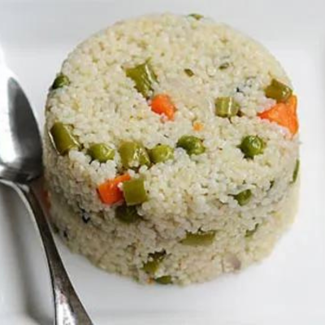
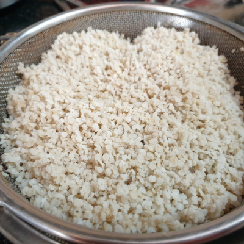
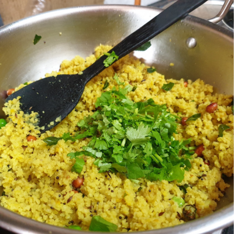
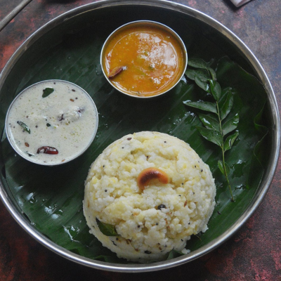
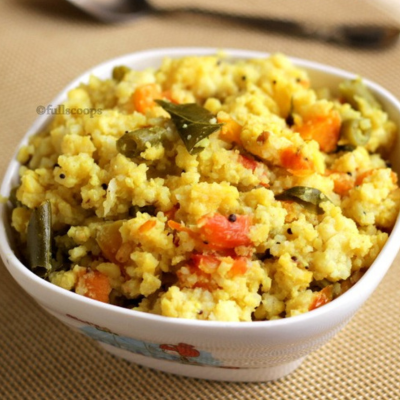
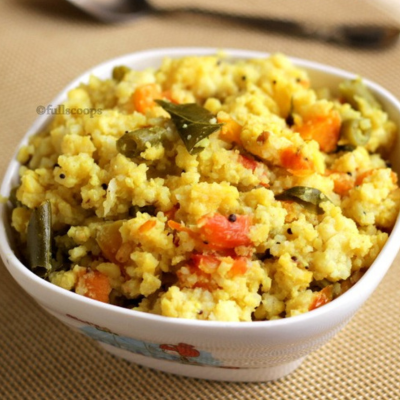

CONNECT WITH HEALTHY LIFE
CONNECT WITH HEALTHY LIFE
தேவையான பொருட்கள்:
செய்முறை:
1.ஒரு கப் பீஜே சாமை அரிசி எடுத்து 10 முதல் 15 நிமிடங்கள் ஊற வைக்கவும்.
2. அதை நன்கு கழுவி 2 கப் தண்ணீர் சேர்க்கவும்.
3. தேவையான அளவு உப்பு சேர்த்து குக்கரில் 4 விசில் வரை வேக வைக்கவும்.
4.சாதாரண அரிசிக்குப் பதிலாக இந்த அரிசியைப் பயன்படுத்தலாம்.

தேவையான பொருட்கள்:
செய்முறை:
1. ஒரு கடாயில் எண்ணெய், ஏலக்காய், இலவங்கப்பட்டை, கிராம்பு மற்றும் பிரிஞ்சி இலை சேர்க்கவும்.
2. பின்னர் பெரிய வெங்காயம், பச்சை மிளகாய், கறிவேப்பிலை, கேரட், பீன்ஸ் மற்றும் பச்சை பட்டாணி சேர்த்து பொன்னிறமாகும் வரை வதக்கவும்.
3. இப்போது 2 கப் தண்ணீர், சுவைக்கேற்ப உப்பு சேர்த்து ஒரு நிமிடம் கொதிக்க விடவும்.
4. தண்ணீர் கொதித்த பிறகு 2 கப் பீஜே சாமை அரிசி (கழுவி) சேர்த்து நன்கு கலக்கவும்.
5. இப்போது அரிசி வேகும் வரை 5-10 நிமிடங்கள் மூடி வைக்கவும்.
6. கொத்தமல்லி இலைகளால் அலங்கரித்து சூடாக பரிமாறவும்.

தேவையான பொருட்கள்:
செய்முறை:
1. பீஜே சாமை அரிசியை 2-3 முறை நன்றாகக் கழுவி, 1 கப் தண்ணீர் சேர்த்து 1 விசில் வரை வேக வைக்கவும்.

2. ஒரு கடாயில், சூடானதும் எண்ணெய் சேர்த்து, வேர்க்கடலையைச் சேர்த்து, சிறிது பொன்னிறமாகும் வரை வறுக்கவும்.
4. இரண்டாவதாக கடுகு, உளுத்தம்பருப்பு, ஜீரா, பச்சை மிளகாய், கறிவேப்பிலை சேர்த்து 30 நொடிகள் பொன்னிறமாகும் வரை வதக்கவும்.
5. பிறகு மஞ்சள் தூள் மற்றும் வெங்காயம் சேர்க்கவும். வெங்காயம் சிறிது பழுப்பு நிறமாக மாறும் வரை ஓரிரு நிமிடங்கள் வதக்கவும்.
6. தீயை அணைத்து, ஆறிய தினை, உப்பு சேர்த்து அரை எலுமிச்சை சாறு பிழிந்து கொள்ளவும். எல்லாவற்றையும் நன்றாக கலக்கவும்.

7. கொத்தமல்லி இலைகளால் அலங்கரித்து, சூடாகப் பரிமாறவும்.
தேவையான பொருட்கள்:
செய்முறை:
1. ஒரு சிறிய பிரஷர் குக்கரில் நெய்யை சூடாக்கவும்.
2. முதலில் மிளகு, சீரகம் மற்ற பொருட்களை ஒன்றாக சேர்த்து (பச்சை மிளகாய் கீறல்) மற்றும் ஒரு கிளறவும்.
3. இஞ்சி, பருப்பு சேர்த்து ஒரு நிமிடம் வதக்கவும். கழுவிய பீஜே சாமை அரிசியை குக்கரில் சேர்க்கவும். நன்றாக கலக்கவும்.
4. 2 கப் தண்ணீர், உப்பு சேர்த்து நன்கு கலக்கவும்.
5. குக்கரை மூடி, மிதமான தீயில் 4 விசில் விடவும்.
6. முடிந்ததும், அழுத்தத்தை தானாகவே விடுங்கள். திறந்து நன்றாக மசிக்கவும்.
7. சாமை பொங்கல் தயார்

தேவையான பொருட்கள்:
செய்முறை:
1. பீஜே சாமை அரிசியை சுத்தம் செய்து 10 நிமிடம் ஊற விடவும்
 2. ஒரு கடாயில் எண்ணெய் விட்டு பட்டை, கிராம்பு, முந்திரி வறுக்கவும்
2. ஒரு கடாயில் எண்ணெய் விட்டு பட்டை, கிராம்பு, முந்திரி வறுக்கவும்
3. நறுக்கிய வெங்காயம், பச்சைமிளகாய் சேர்க்கவும் நன்கு வதக்கவும்.
4. வேகவைத்த பச்சைப் பட்டாணி,கேரட் , பீன்ஸ் ஆகியவற்றை சேர்க்கவும்
5. மஞ்சள் தூள் உப்பு தேவையான அளவு தண்ணீர் விட்டு நன்கு கொதிக்க விடவும்
6. தண்ணீர் நன்கு கொதித்த பின்பு ஊற வைத்த சாமை அரிசியை சேர்க்கவும்.
 7. சாமை அரிசி தண்ணீர் வற்றி நன்கு வெந்ததும் கலந்து இறக்கி விடவும்.

7. சாமை அரிசி தண்ணீர் வற்றி நன்கு வெந்ததும் கலந்து இறக்கி விடவும்.
